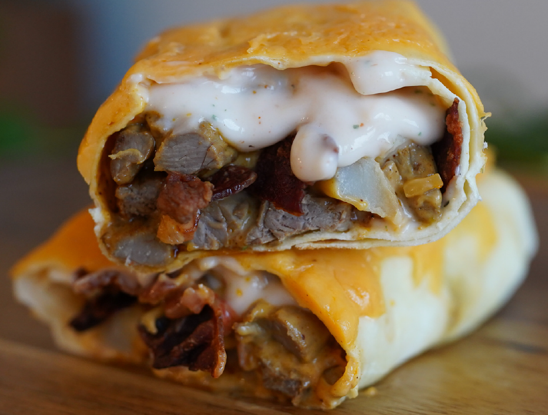

| Calories | Protein | Carbs | Fat | Fiber | Servings |
|---|---|---|---|---|---|
| 555 | 47g | 63g | 19g | 20g | 12 |
Take 84 grams (1/3 cup) fajita/skirt steak and mix in 6 grams (~2 1/2 tsp) low sodium taco seasoning. Cook the steak in a pan over medium heat. Microwave 8 grams (~1 slice) bacon. Air fry 85 grams (~1 cup) frozen potato wedges on 400 degrees F for 12 minutes.
To make the chipotle sauce: In a small bowl, mix together 21 grams (~1 1/2 tbsp) non-fat plain Greek yogurt, 1 gram (~1/4 tsp) Sriracha, and a dash of ranch seasoning. Add a dash of water to thin out the sauce.
Take 1 low carb flour tortilla and add the cooked steak, 1 slice of cooked bacon (chopped), 14 grams (2 tbsp) of rinsed fat free shredded cheddar cheese, and 51 grams (~3 tbsp) salsa con queso. Top with the chipotle sauce, 50 grams (~1/4 cup) plain non-fat Greek yogurt (to act as sour cream), and the cooked potatoes. Carefully roll the tortilla into a burrito.
Take 28 grams (1/4 cup) rinsed fat free shredded cheddar cheese and add it to one side of a pan. Spray the other side of the pan with olive oil spray and add the burrito. Cook on low/medium heat until the cheese starts to get crispy. Carefully place the burrito onto the cheese to melt it onto the burrito and then carefully flip the burrito to toast the other side.
Train With Shay Cookbook pg 236